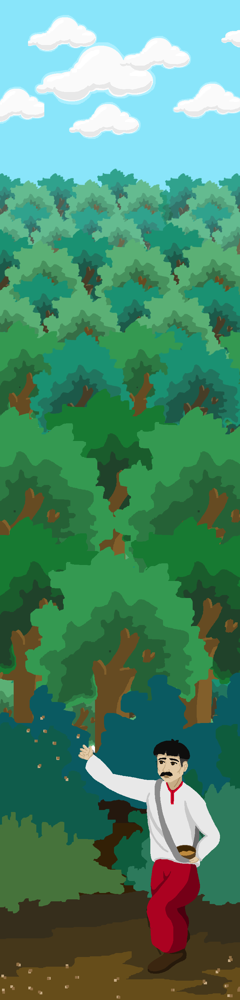

<style>
    *{
        margin: 0;
    }
    .monastery-section {
        background-color: #fff;
        display: flex;
        flex-direction: column;
        overflow: hidden;
        color: #fff;
        font-weight: 400;
        align-items: center; 
    }

    .hero-banner {
        display: flex;
        flex-direction: column;
        position: relative;
        z-index: 10;
        min-height: 179px;
        width: 100%;
        gap: 40px 100px;
        flex-wrap: wrap;
        padding: 40px;
        align-items: center; 
        text-align: center;
        font-family:AuX_DotBitC_Xtra_Bold; 
    }

    
    @media (max-width: 991px) {
        .hero-banner {
            max-width: 100%;
            font-size: 40px;
            padding: 0 20px;
        }
    }

    .hero-background {
        position: absolute;
        inset: 0;
        height: 100%;
        width: 100%;
        object-fit: cover;
        object-position: center;
    }

    .header-wrapper {
        display: flex;
        align-items: center;
        justify-content: center; 
        width: 100%;
        margin-left: 30px;
        margin-top: 50px;
    }

    .hero-title {
        position: relative;
        flex-grow: 1;
        margin: auto 0;
        font-size: 60px;
        display: flex;
        align-items: center; 
        margin-left: 190px;
    }

    .back-button {
        margin-right: 20px;
        background: white;
        border: none;
        border-radius: 50%;
        width: 70px;
        height: 70px;
        display: flex;
        align-items: center;
        justify-content: center;
        cursor: pointer;
        z-index: 20; 
        transition: transform 0.2s ease; 
        background-image: url('images/back-arrow.png');
        background-size: 70%; 
        background-repeat: no-repeat; 
        background-position: center; 
    }

    .back-button:hover {
        transform: scale(1.2); 
    }

    @media (max-width: 991px) {
        .hero-title {
            max-width: 100%;
            font-size: 40px;
        }
    }

    .content-wrapper {
        display: flex;
        flex-direction: column;
        position: relative;
        min-height: 5082px;
        margin-top: -19px;
        width: 100%;
        align-items: center; 
        justify-content: center; 
        padding: 1399px 80px;
        font: 30px Inter, sans-serif;
        text-align: center; 
    }

    @media (max-width: 991px) {
        .content-wrapper {
            max-width: 100%;
            padding: 100px 20px;
        }
    }

    .story-container {
        position: relative;
        display: flex;
        margin-bottom: -307px;
        width: 100%;
        max-width: 1136px;
        flex-direction: column;
        align-items: center; 
    }

    @media (max-width: 991px) {
        .story-container {
            max-width: 100%;
            margin-bottom: 10px;
        }
    }

    .story-intro,
    .monastery-life,
    .tatars-invasion,
    .nuns-hiding,
    .monastery-decline,
    .legend-conclusion {
        text-align: center; 
        max-width: 100%; 
        margin: 40px 0; 
        margin-bottom: 200px;
    }

    .story-intro {
        border: 1px solid #000;
    }

    @media (max-width: 991px) {
        .story-intro,
        .monastery-life,
        .tatars-invasion,
        .nuns-hiding,
        .monastery-decline,
        .legend-conclusion {
            margin: 40px 4px; 
        }
    }
</style>

<section class="monastery-section">
    <header class="hero-banner">
        
        <div class="header-wrapper">
            <button class="back-button" onclick="window.history.back();"></button>
            <h1 class="hero-title">«Звіідки в с. Подільське ліс?>></h1>
        </div>
    </header>
    
    <main class="content-wrapper">
        
        <article class="story-container">
            <p class="story-intro">
                Колись давно, коли ще село Подільське було малим хутірцем, на його околиці, серед розлогих полів і луків, оселився селянин на ім’я Ярема. Був він чоловіком працьовитим і невтомним — руки в нього завжди були зайняті справами. З першими променями сонця Ярема вже був у роботі, а коли інші відпочивали, він усе ще трудився, доглядаючи своє невелике господарство. Біля його хати стояла невелика стодола, а трохи далі лежав глибокий яр, що лякав своєю дикою і непривітною природою. З дна яру текла болотиста річечка, яка щовесни розмивала береги, перетворюючи яр на ще більш небезпечне і непридатне для життя місце.
            </p>
            <p class="monastery-life">
                Старі люди розповідають, що цей яр був місцем, куди навіть найвідважніші селяни не наважувалися ступити ногою. Його круті схили ставали дедалі небезпечнішими, і ніхто не вірив, що коли-небудь його вдасться приборкати. Та Ярема був людиною не з тих, хто зупиняється перед труднощами. Якось, дивлячись на безплідний яр, він вирішив перетворити це пусте і небезпечне місце на щось живе. Вирішив засадити яр деревами, щоб утримати землю від розмиву й перетворити цей дикий закуток на затишний куточок природи.
            </p>
            <p class="tatars-invasion">
                Не раз Ярема звертався до односельців по допомогу, але кожен був зайнятий своїми справами. Люди лише здалеку спостерігали за його зусиллями, хитали головами і говорили, що це марна справа. Та Ярема не здавався. Ходив по лісах, викопував молоді деревця, збирав саджанці вишень та сливок, просив у людей все, що тільки міг знайти. День за днем яр почав оживати. Маленькі деревця, посаджені на схилах, розпочали свою боротьбу за життя, коріння вчепилося в землю, стримуючи весняні води. 
            </p>
            <p class="nuns-hiding">
                Проте одного літа природа вирішила випробувати його терпіння: вдарила нестерпна спека, і дерева почали в’янути. Ярема бачив, як зусилля його праці можуть пропасти марно, та не дозволив собі опустити руки. Він вирішив створити греблю, яка б утримувала воду і зволожувала ґрунт. Цього разу Ярема вже не був самотнім у своїй боротьбі: його незламність і завзятість надихнули сусідів, і ціле село зібралося, щоб допомогти. Люди носили каміння, збирали колоди, і невдовзі на дні яру з'явився маленький ставок.
            </p>
            <p class="monastery-decline"> 
                З появою води стало можливим поливати молоді дерева, і яр поступово почав зеленіти. Щовесни селяни разом з Яремою досаджували нові деревця, і з кожним роком цей колись зловісний яр перетворювався на справжній ліс. Працьовитість і настирливість Яреми зробили диво: через кілька років яр зеленів молодими деревами, а маленький ставок розрісся до справжнього водоймища, де тепер росли лілії, плавали качки, а на берегах відпочивали селяни.
            </p>
            <p class="legend-conclusion">
                Згодом і ліс, і ставок стали називати Яреминим, на честь людини, яка не побоялася викликів і своєю працею змогла перетворити пустку на мальовничий куточок природи. І хоча Ярема давно пішов з цього світу, його ліс досі живе, шелестить листям і розповідає нащадкам про мужність і силу духу одного працьовитого селянина. 
            </p>
        </article>
    </main>
</section>